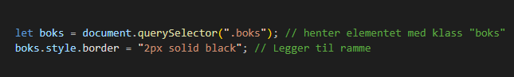

Modern JS og CSS-manipulering
JavaScript gir oss muligheten til å manipulere CSS-stiler dynamisk,
slik at vi kan endre utseendet på en nettside basert på brukerinteraksjoner.
Dette gjøres ved å velge HTML-elementer og endre deres style-egenskaper
eller klasser.
Disse metodene hjelper deg til å velge HTML-elementer med JavaScript
Kolonnen "Returnerer" i tabellen beskriver hvilken type data hver metode gir tilbake når den brukes.
document.getElementById()
Denne metoden fungerer best når du vet at HTML-elementet har en unik ID.
Slik bruker du getElementById og funksjoner for CSS-manipulering
Hvis du klikker på teksten "Endre min stil" vil fargen endre seg hver gang du klikker på det. Dette er fordi hver gang du klikker vil HTML elementet
kjøre en funksjon som endrer stilen
Klikk her for å endre stilen!
HTML-elementet
JavaScript-kode
document.getElementsByClassName()
Velger alle elementer med en bestemt klasse (HTMLCollection) og brukes når du vil endre flere elementer samtidig.
HTML-elementet
JavaScript-kode
Første paragraf
Andre paragraf
document.getElementsByName()
Med getElementsByName velger du elementer basert på name-attributtet (HTMLCollection) og den brukes vanligvis i skjemaer,
f.eks. radio-knapper og input-felt.
document.getElementsByTagName()
Med getElementsByTagName velger du alle elementer med et bestemt HTML-tagnavn (HTMLCollection)
og brukes når du vil endre flere elementer av samme type.
JavaScript-kode
document.querySelector()
Med querySelector() velger du det FØRSTE elementet som matcher en CSS-selektor.
Metoden er meget fleksibel og du kan bruke ID, klasse, navn, tag, osv.

I dette eksempelet er det to HTML-elementer med samme klasse. Metoden querySelector()
endrer stilen til det første elementet med klassen 'boks' og ignorerer de andre, selv om de også har samme klasse.
Første boks
Andre boks
document.querySelectorAll()
Velger ALLE elementer som matcher en CSS-selektor (NodeList)
og den er perfekt når du vil endre flere elementer uten bruk av klasser.
HTML-elementer
JavaScript-kode